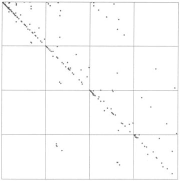
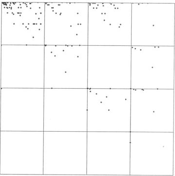
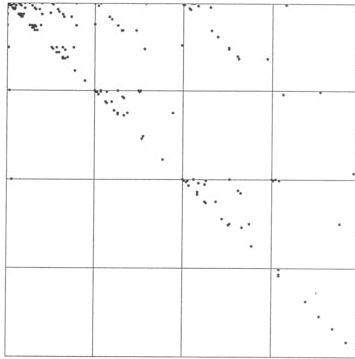
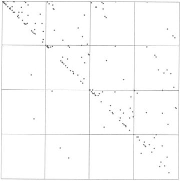
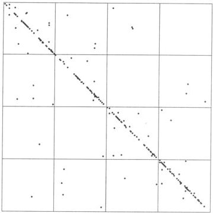

| In their project for the autumn, 2000, fractal geometry
course, Simo Kalla and Nader Sobhan analyzed the differences in daily closing
prices of six stocks for the 251 trading days in 1998. They selected |
| Coca-Cola and Kellogg (food industry), |
| Nokia and Motorola (telecommunications), |
| Microsoft (software), and Chase Manhattan (banking). |
|
| Dow Jones Interactive was the source
of the information. Here are the driven IFS plots. |
|  |
 |
 |
| Coca-Cola |
Kellogg |
Nokia |
|  |
 |
 |
| Motorola |
Microsoft |
Chase Manhattan |
|
|
| This was a small test, a small number of stocks and only one
year's data. |
| Moreover, comparing only the length two addresses is fairly crude. |
| With more data, longer address squares could be compared, giving more refined
measurements of the relative motions of the stocks. |
| Nevertheless, this is a clever idea. |
| Kalla and Sobhan conclude,
"Since fractal geometry is a relatively new field, it might open doors to exciting
new ways of measuring correlations of two random variables." |